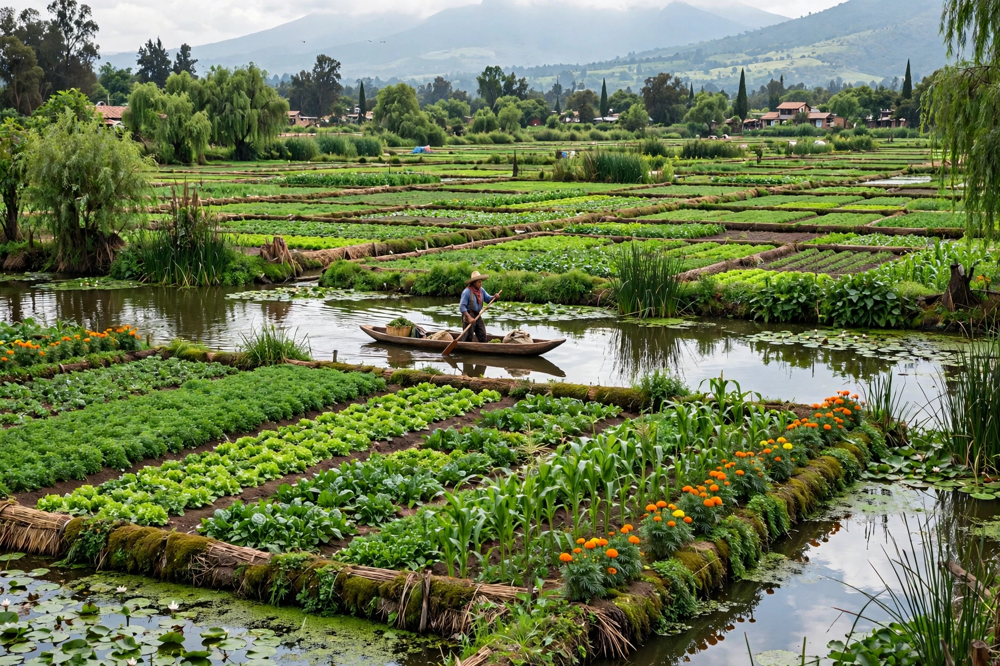

A chinampa (Nahuatl: chināmitl) is a type of Mesoamerican agriculture consisting of small, rectangular areas of fertile arable land built up in shallow lake beds, notably in the Valley of Mexico lakes around Tenochtitlan and Xochimilco. Sometimes called "floating gardens" (though they are fixed to the lakebed), chinampas were extraordinarily productive, yielding multiple harvests per year.

Farmers staked out rectangles in the shallow lake, fenced them, and piled lake sediment, mud and vegetation until the plot rose above the water, planting willows (ahuejotes) at corners to stabilise edges. Canals between plots allowed canoe transport and irrigation by capillary action. Chinampas fed much of Tenochtitlan's population and survive today in Xochimilco, a UNESCO World Heritage site, though threatened by urbanisation and water pollution.